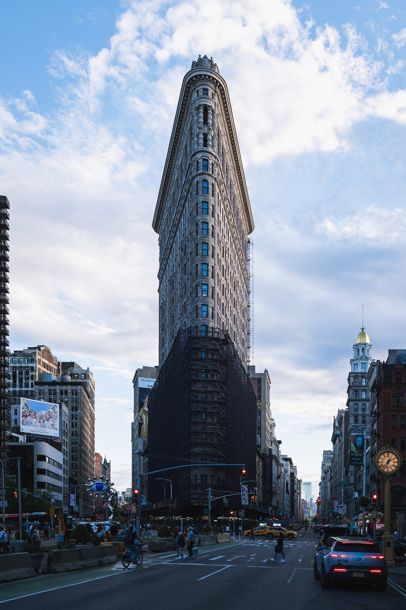

Assignment 02 / p5.js 02
City Signal Glitch
Fifteen open city photographs become a restless field of risograph-ish color separations, scanline drift, and blocky transmission errors. Move to pan through the image; click to load the next city.
